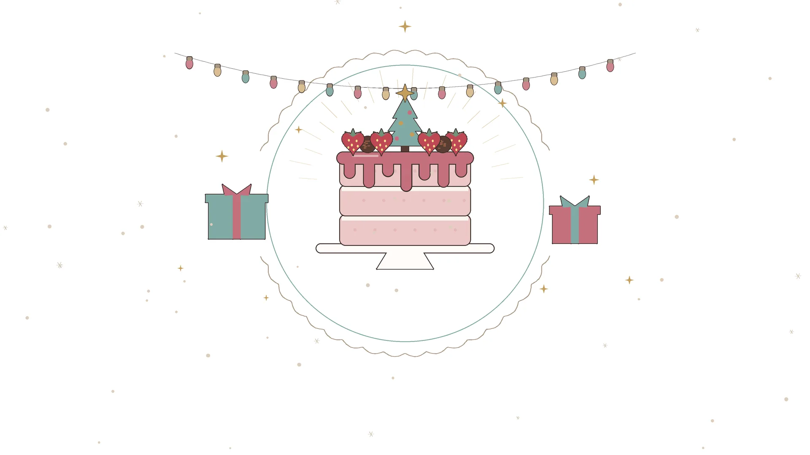

Sweet Feliz · Doces de Natal feitos à mão no Campo Limpo
Ver o cardápioCardápio de Natal
Encomendas até 18/12. Toque em um doce para ver os detalhes e colocá-lo na sacolinha.
As fotos são ilustrativas: cada doce é feito à mão, então a decoração pode variar um pouco.
Como encomendar
- Monte a sua sacolinhaEscolha os doces e, no bolo, o tamanho, a massa, o recheio e o topo. O total aparece na hora.
- Envie pelo WhatsApp e confirme com o sinalO pedido chega para nós já montado e é confirmado com o pagamento de 50% do valor, por Pix, dinheiro ou cartão.
- Retire no dia combinadoRetiradas em 23/12 até 22h ou em 24/12 até 12h. O restante é pago na retirada, antes do horário marcado, por causa do movimento intenso de retiradas.
Dúvidas sobre as encomendas
Vocês fazem entrega?
Trabalhamos somente com retirada. Se preferir um motorista por aplicativo, a solicitação fica por sua conta. Não nos responsabilizamos por entregas feitas pelo aplicativo.
Até quando posso encomendar?
Até 18/12. As encomendas de Natal são limitadas, então vale garantir a sua com antecedência.
Posso pagar no cartão?
Sim. No cartão de crédito, enviamos um link de pagamento com o acréscimo da taxa da maquininha. Também aceitamos Pix e dinheiro.
E se eu precisar cancelar?
Em caso de cancelamento, o sinal de 50% não é reembolsado. Sem o sinal, o pedido é considerado apenas um orçamento.
Como conservo a sobremesa até a ceia?
Mantenha a sobremesa refrigerada até a hora da ceia, para conservá-la melhor.
O doce vem igual à foto?
As fotos são ilustrativas. Como cada doce é feito à mão, a decoração pode ter pequenas variações.

Fale com a Sweet Feliz
Para encomendas do cardápio, bolos personalizados de aniversário ou qualquer dúvida, fale conosco pelo WhatsApp. No Instagram, você acompanha as novidades.
Campo Limpo, Zona Sul de São Paulo · somente retirada